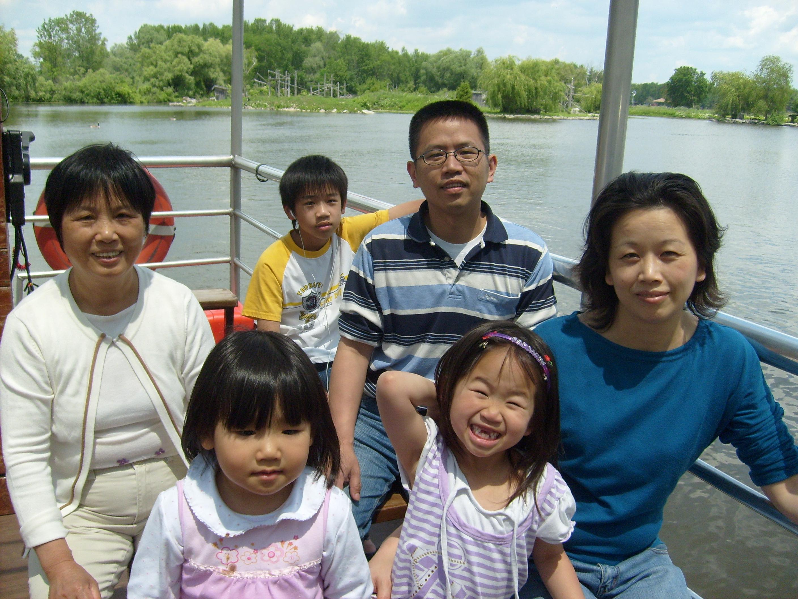

Family is everything.
My parents immigrated from China and started a life (and mine technically) in Canada. We don't get to go back to China very often because it's really expensive and far, but we stay in contact with my extended family through Wechat - thank you internet for existing. I have always really valued my family history and cultural background, so I wanted to share it with you too! This map shows all the locations that were significant to my family history from my grandparents to now. Blue markers indicate my dad's side, Red markers indicate my mom's side and Pink markers indicate my family! Click on the North American locations to see photos!
1 / 3
This is my family!

2 / 3
This features some of my mom's side of the family!

❮
❯
3 / 3
This features some of my dad's side of the family!